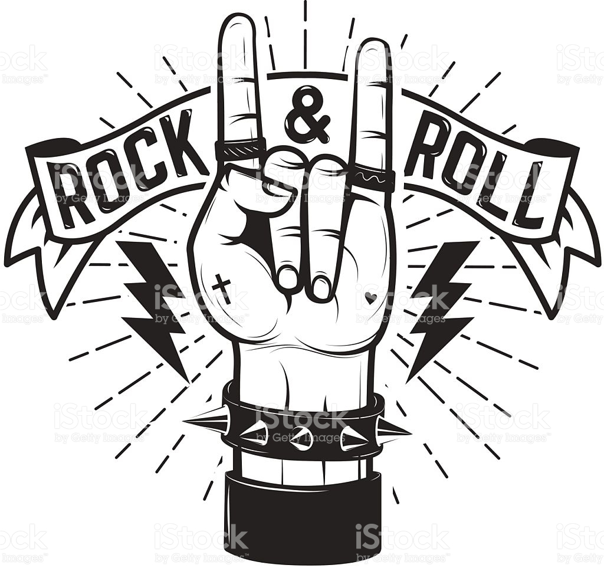
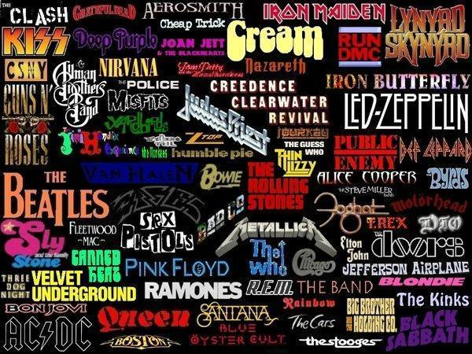
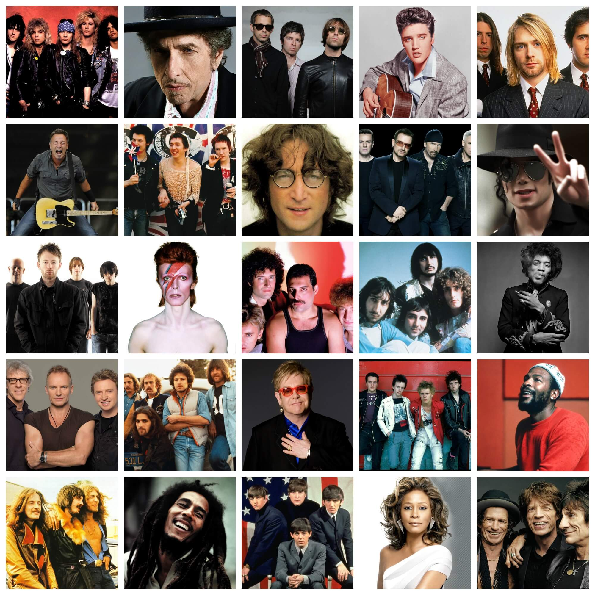

 Derivados del Rock
Rockabilly, Pop rock, Rock psicodélico, Garage rock, Rock sinfónico, Rock progresivo,
Jazz rock, Glam rock, Hard rock, Punk rock, Rock gótico, Krautrock, Heavy metal, New wave, Post punk,
Soft rock, Rock alternativo, Noise pop, Shoegazing, Grunge, Brit pop, Dream pop, Emo, Geek rock, Indie,
Post rock, Rock ácido, Rock experimental, Rock instrumental, entre mucho otros. |
Hicieron historia

|
No solo bandas legendarias, también grandes artistas marcaron la historia del Rock influyendo culturalmente en
la vida de millones de jóvenes, las llamadas leyendas del Rock, John Lennon, Jimi Hendrix, Jim Morrison,
Freddie Mercury, Janis Joplin, entre muchos otros que dieron pie al movimiento musical más importante de todos los tiempos.
Podrás encontrar sus biografias en nuestra GALERIA.

|